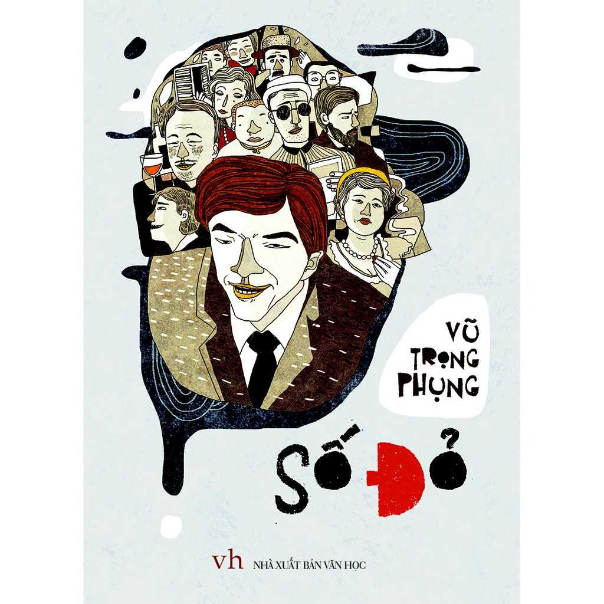

Thông tin tác phẩm
- Tác giả Vũ Trọng Phụng
- Xuất bản 1936
- Thể loại Tiểu thuyết trào phúng
- Quốc gia Việt Nam
- Ngôn ngữ Tiếng Việt

“Một xã hội lố bịch đến mức
cái vô học cũng có thể trở thành danh giá.”
“Tang gia ai cũng vui vẻ cả.
Cụ cố Hồng mơ màng đến lúc mặc đồ xô gai,
chống gậy, ho khạc mếu máo để được thiên hạ khen
là một người con chí hiếu.
Ông Văn Minh thì sung sướng vì cái chúc thư kia
đã đi vào thời kỳ thực hành chứ không còn là lý thuyết viển vông nữa.
Cô Tuyết mặc bộ đồ Ngây Thơ,
trông hở cả nách và nửa vú,
để chứng minh rằng mình vẫn còn trinh tiết.”
“Người chết thì đã chết rồi,
nhưng người sống thì cứ phải vui vẻ,
phải hưởng hạnh phúc chứ.”
Đó là một trong những đoạn nổi tiếng nhất
của “Số Đỏ”,
nơi Vũ Trọng Phụng đẩy sự lố bịch,
giả tạo và suy đồi đạo đức
của tầng lớp thượng lưu thành một màn hài kịch cay đắng.
Tiếng cười trong tác phẩm
không chỉ để mua vui,
mà còn là sự châm biếm sắc lạnh
dành cho cả một xã hội sính Âu hóa
và đầy giả dối.